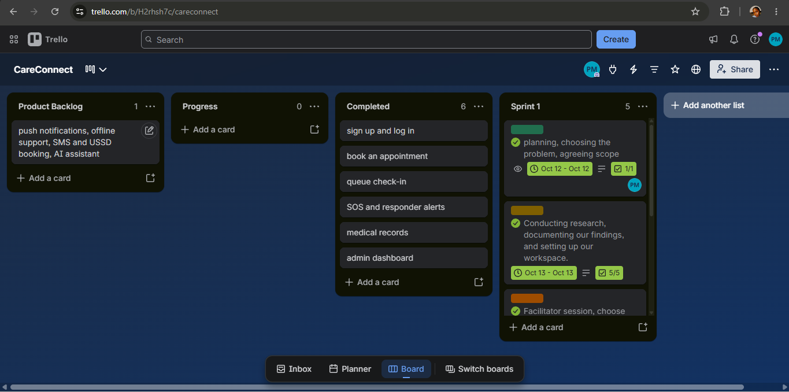
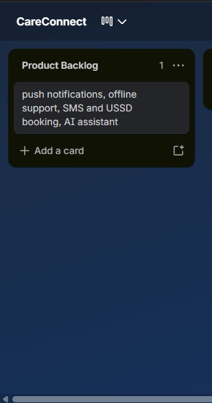
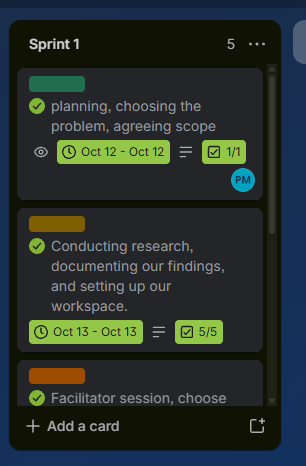

WIL Part 2: Industry Placement at Capaciti (September to October 2026)
From September, I joined the Capaciti Data Academy AI Bootcamp as my industry placement, and I am still there. The bootcamp runs weekly, project-based sprints: a chatbot, a content generator, a sentiment analysis tool and, in Week 4, an end-to-end AI solution for an industry of our choice. I chose CareConnect, our Week 4 group project, as my main example for this portfolio because it was our final project and the one we presented to the facilitators and the cohort.
CareConnect is a mobile-first web app for a Cape Town community clinic. Patients can book appointments, join a queue and send a one-tap SOS to first responders, while doctors, nurses, first responders and admins each see their own screens.
Sprint 1: 12 to 16 October 2026. We were first told to finish and present on Friday 16 October, and the presentation was then moved to Monday 19 October 2026. My role: Frontend Developer. I built the app, set up Supabase and deployed it to Vercel. Links: CareConnect app | Code on GitHub | Trello board
I set up the CareConnect Trello board after the sprint to document the work, using my notes and my GitHub commits. Our team planned and discussed face to face during the sprint.
| Andile Pamela Masina |
Frontend Developer |
| Nuyra Swanson |
Researcher |
| Olwethu Tshing |
Backend Developer |
| Siphelele Zono |
Project Manager |
| Sinalo Kebetwana |
Database Developer |
I built the app myself, and the commits on GitHub are mine. Siphelele shared the written documentation and Nuyra shared the PowerPoint slides on Microsoft Teams, and Olwethu tried building the app on his side too, so that we could compare.
Back to top
CareConnect Artefact 1: Agile Team Charter
Evidence: Agile Team Charter (PDF)
| Mission |
Build a secure, easy-to-use app that shortens waiting at community clinics, makes booking clear, and gets help to people in an emergency faster |
| Success |
A working, deployed app with booking, a queue, a one-tap SOS, role-based access and protected patient data, presented at the end of the sprint |
| Framework |
Kanban on Trello, with one sprint from 12 to 16 October and a presentation to the facilitators |
| Communication |
Face-to-face group discussions, Microsoft Teams for sharing documents and slides, GitHub for code |
| Decisions |
Consensus, then our facilitator if we are stuck |
| Definition of done |
Features work correctly, are committed to GitHub, work on the deployed Vercel version and are ready to demonstrate |
| Main risks |
Securing patient data with role-based access, keeping the queue and SOS up to date across users, and a very short time |
Reflection (STAR)
Situation: We were a new group of five on a one-week project. We met on 12 October to plan, choose the problem and agree the scope, and again on 14 October, after our facilitator explained the brief, to decide on the health system and who would do what.
Task: We had to agree on a purpose, roles and ways of working quickly, so that we could use the rest of the week to build and present.
Action: We wrote the charter around a shared mission and a clear list of roles, with me as Frontend Developer, Nuyra as Researcher, Olwethu as Backend Developer, Siphelele as Project Manager and Sinalo as Database Developer. We agreed to communicate face to face and to share documents on Microsoft Teams.
Result: The charter gave us a shared goal, but in practice the work was not split the way the roles suggested. I built the app alone, while others shared documentation and slides on Teams and one member tried building the app separately for comparison. I was not always sure what everyone else was working on. I learned that a list of roles is not enough, and that a team also needs a short, regular update on who is doing what. Next time I would ask every member to post a daily update, so that the work is visible and shared more evenly.
Back to top
CareConnect Artefact 2: User Stories and Tasks
Evidence: Trello board

We wrote user stories for each role in the app: patient, doctor or nurse, first responder and admin.
| US-01 |
As a user, I want to sign up and log in with my role, so that I see the right features |
Sign up and log in screens, role selection, password reset |
Working |
| US-02 |
As a patient, I want to book an appointment at a clinic, so that I do not have to phone around |
Clinics list, booking screen |
Working |
| US-03 |
As a patient, I want to see and cancel my appointments, so that I can manage my care |
My appointments screen |
Working |
| US-04 |
As a patient, I want to check in to the queue and see my place, so that I know how long I will wait |
Queue status screen |
Working |
| US-05 |
As a patient, I want to send an SOS with one tap, so that help knows where I am |
SOS screen, location, nearest clinic |
Working |
| US-06 |
As a patient, I want to see my medical record, so that I know what the clinic has on file |
Medical record screen |
Working |
| US-07 |
As a doctor or nurse, I want to manage the queue, so that patients are seen in order |
Queue management screen |
Working |
| US-08 |
As a doctor or nurse, I want to see my appointments, so that I can prepare |
Doctor and nurse dashboards, staff appointments |
Working |
| US-09 |
As a doctor or nurse, I want to update a patient's record, so that the next person has current information |
Patient record editor |
Working |
| US-10 |
As a first responder, I want to receive SOS alerts and update them, so that I can reach people fast |
Responder inbox |
Working |
| US-11 |
As an admin, I want to manage staff and roles, so that the right people have access |
Admin dashboard, users |
Working |
| US-12 |
As an admin, I want to manage services and clinic details, so that patients see accurate options |
Admin dashboard, services |
Working |
| US-13 |
As a user, I want to install the app on my phone, so that I can open it like any other app |
PWA setup |
Working |
| US-14 |
As a patient, I want my data protected, so that only the right people can see it |
Access rules for each role |
Working |
Four more stories were left for the future: push notifications and SMS, offline support, SMS and USSD booking, and an AI health assistant.
Reflection (STAR)
Situation: Our facilitator gave us the brief on 14 October, and we had to turn it into a working app in a few days.
Task: I had to turn each user story into a working screen, and starting was the hardest part for me.
Action: I wrote the stories by role, so that each person who uses the app had their own set. I then started the app on 14 October with the Supabase setup and the clinics flow, and I added the other screens one story at a time.
Result: Working through the stories one at a time gave me a clear order to build in, and by the presentation each role had its own screens. I learned that stories written by role make it easier to see what to build next, and that I should have broken the biggest stories, like the SOS and the role-based access, into smaller tasks earlier.
Back to top
CareConnect Artefact 3: Product Backlog
Evidence: Trello board, Product Backlog list

On the Trello board, the Product Backlog list holds the future enhancements, and the stories we built are in the Completed list.
The product backlog lists all of the work we planned for CareConnect, in priority order. Safety and privacy came first: access rules, sign up, the SOS and the responder screen. Then came the patient journey of booking and queue, then staff and admin tools, and last the improvements. The future ideas stayed at the bottom of the list.
| 1. Must |
Supabase setup, role-based access, sign up and log in, SOS and responder alerts |
Done at the presentation |
| 2. Must |
Book an appointment, queue check-in, staff queue, admin staff management, deployment |
Done at the presentation |
| 3. Should |
My appointments, medical records, staff schedule, record editing, admin services, PWA install |
Done at the presentation |
| 4. Could |
Push notifications, SMS fallback, offline support, assisted booking points, SMS and USSD booking, multilingual support, native low-data app, AI health assistant |
Future |
Reflection (STAR)
Situation: With only a few days, we could not build everything we imagined, so we needed an order.
Task: I had to decide what the app needed first, and what could wait.
Action: I put anything that affected safety, such as the SOS and who can see patient data, at the top, followed by the booking and queue that patients use most. The ideas that needed more time or other services, like SMS booking and the AI assistant, went to the bottom as future work.
Result: We presented a working app with all of the main journeys, and a clear list of what would come next. I learned that a backlog is an order of decisions, not just a list. Putting "Could" items at the bottom stopped them from taking time away from the "Must" items.
Back to top
CareConnect Artefact 4: Sprint Backlog
Evidence: Trello board, Sprint 1 list

Sprint 1, 12 to 16 October 2026. Sprint goal: Choose the problem, research and plan the solution, and build the first working version of CareConnect.
| 12 October |
Planning, choosing the problem and agreeing the scope |
Complete |
| 13 October |
Conducting research, documenting our findings and setting up our workspace |
Complete (5 of 5 subtasks) |
| 14 October |
Facilitator session on the brief. Group meeting to finalise the health system and who does what. Start the app: Supabase setup, clinics flow and the brand colours |
Complete |
| 15 October |
Update the interface to the Figma prototype and add the missing screens. Responsive layout and Supabase fixes. Save profile details |
Complete |
| 16 October |
Role selection at sign up and a dashboard for each role. Staff number for staff accounts. Clean up the layout |
Complete |
Reflection (STAR)
Situation: Our facilitator first told us that the app had to be finished and presented on Friday, and I felt anxious about being rushed. Later he moved the presentation to Monday 19 October, and I relaxed because I knew I would have the time to complete the app.
Task: I had to plan one sprint of daily work that moved us from choosing a problem to a working app, while carrying most of the building myself.
Action: I planned the sprint day by day. The first two days were for planning and research, then I started the app on 14 October, brought it in line with our Figma designs on 15 October, and built the role selection and role dashboards on 16 October. I worked on the largest and most important parts first.
Result: By the end of the sprint the app had sign up, role-based dashboards and the clinics flow, and we presented the finished app on Monday 19 October. I learned that starting is the hardest part, and that pressure from a short deadline is easier to manage when the work is planned in small daily steps. Next time I would split the work across the whole team from day one.
Back to top
CareConnect Artefact 5: Agile Logbook
Evidence: Agile Logbook for CareConnect
I wrote the CareConnect logbook up after the sprint, using my Trello cards and my GitHub commit history, as the entries below show. It follows the same template as my HandyHub logbooks, with three stand-up questions for each day.
| Mon 12 Oct |
Planned with the group, chose the problem and agreed the scope |
Research the problem and set up our workspace |
None recorded |
| Tue 13 Oct |
Researched the problem, documented our findings and set up our workspace |
Attend the facilitator session and finalise our choices |
None recorded |
| Wed 14 Oct |
Attended the facilitator session on the brief. Met my group to finalise the health system and who does what. Started the app with Supabase, the clinics flow and the brand colours, and applied the Figma-inspired interface |
Match the interface to the Figma prototype and add the missing screens |
Starting the app, and time pressure, because we had been told to present on Friday |
| Thu 15 Oct |
Updated the interface to the Figma prototype and added the missing screens. Made the layout responsive, fixed Supabase issues and saved profile details |
Add role selection at sign up and a dashboard for each role |
Time pressure. I could not see what the other members were working on |
| Fri 16 Oct |
Added role selection at sign up and routed each role to its own dashboard. Added a staff number for staff accounts. Cleaned up the layout |
Continue building and designing the app, and prepare to present |
Time pressure |
| Mon 19 Oct |
Presented CareConnect to the facilitators with a live demo and a QR code to the deployed app |
Reflect on the project |
None |
Reflection (STAR)
Situation: For CareConnect I did not keep the logbook day by day. I wrote it afterwards from my Trello cards and my GitHub commits.
Task: I had to give an honest record of a week of work, for a project where the days moved fast.
Action: I used the dated commits and the Trello cards as the source for each entry, and I kept the blockers I had really felt: starting, time pressure and not seeing what others were doing.
Result: The commit history made the record accurate, but writing it afterwards was harder than keeping it daily, as I did for HandyHub. I learned that a logbook is most useful when it is written as the work happens, because it makes blockers visible while they can still be fixed. Next time I would write the three stand-up answers at the end of every day.
Back to top